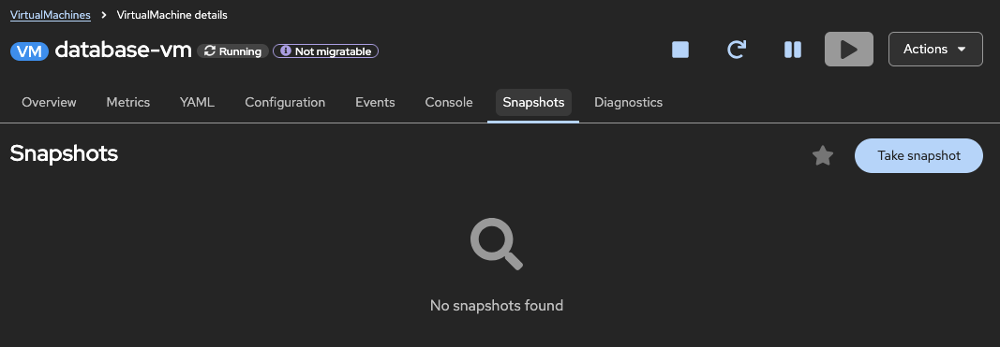
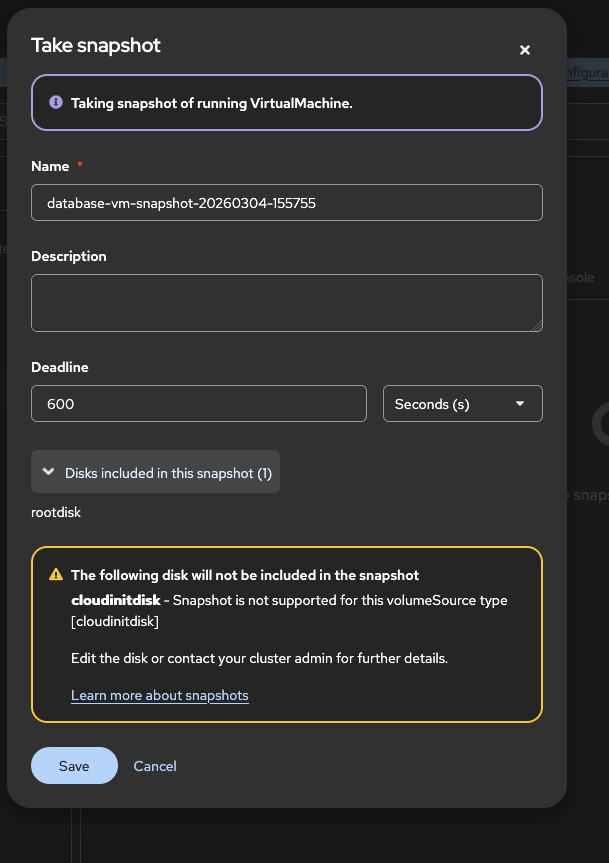
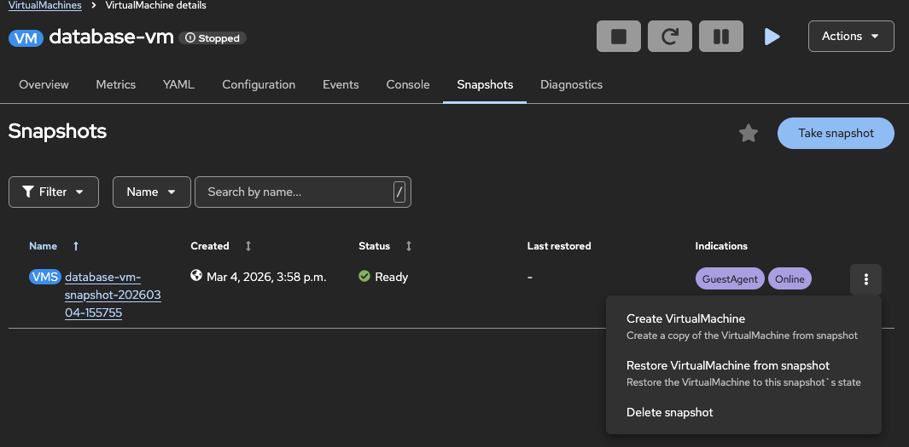

VM スナップショットの作成と管理
概要
VM スナップショットは、ディスクや (オプションで) メモリ状態を含む、特定の時点における仮想マシンの状態をキャプチャします。スナップショットを使用すると、アップデート失敗後の迅速なロールバックや、変更の安全なテスト、メンテナンス作業前の復元ポイントの作成が可能になります。
このチュートリアルでは、OpenShift Virtualization で VM スナップショットを作成、管理、および復元する方法について説明します。
スナップショットを使用するタイミング
スナップショットは、多くの仮想化管理者がすでに行っている運用手順に対応しています。一般的な用途は以下のとおりです。
-
アップグレード前のセーフティネット: OS のアップグレードやアプリケーションの更新前にスナップショットを取得します。アップグレードが失敗した場合は、VM を再構築する代わりに即座にロールバックできます。
-
パッチ適用前のチェックポイント: 毎月のセキュリティパッチ適用前にスナップショットを取得することで、問題を引き起こすパッチを元に戻すことができます。
-
安全な設定テスト: ネットワーク設定、ファイアウォールルール、アプリケーション設定を変更する前にスナップショットを取得します。変更によって機能が損なわれた場合に元に戻せます。
-
コンプライアンスのチェックポイント: 監査のマイルストーンでスナップショットを取得し、正常と確認されている状態をコンプライアンスの証跡として保存します。
-
トレーニングおよびラボ: クリーンなラボ VM のスナップショットを取得しておくことで、受講者が自由に実験し、演習の合間に既知の状態にリセットできるようにします。
| スナップショットはバックアップではありません。スナップショットは VM のディスクと同じストレージバックエンドに保存されるため、そのバックエンドの障害や損失からは保護されません。迅速なローカルロールバックにはスナップショットを使用し、ディザスターリカバリーにはバックアップソリューションを使用してください。 |
前提条件
-
OpenShift Virtualization がインストールされた OpenShift 4.18 以降
-
スナップショット対象となる実行中または停止中の VM
-
CSI スナップショットをサポートする Storage Class
-
インストール済みの
ocおよびvirtctlCLI ツール
スナップショットストレージのサポート確認
スナップショットを作成する前に、ストレージが CSI スナップショットをサポートしていることを確認します。
oc get volumesnapshotclass出力例:
NAME DRIVER DELETIONPOLICY AGE
csi-hostpath-snapclass hostpath.csi.k8s.io Delete 30d
ocs-storagecluster-rbdplugin-snapclass openshift-storage.rbd.csi.ceph.com Delete 30dVolumeSnapshotClass が存在しない場合は、クラスター管理者に連絡し、ストレージプロバイダー用に設定を依頼してください。
VM スナップショットの基礎知識
スナップショットリソース
OpenShift Virtualization では、スナップショット用に主に 2 つのリソースを使用します。
- VirtualMachineSnapshot
-
VM のスナップショットを作成するためのリクエストです。ソース VM およびスナップショット設定への参照が含まれます。
- VirtualMachineSnapshotContent
-
実際のスナップショットデータであり、VirtualMachineSnapshot が処理されると自動的に作成されます。基盤となる VolumeSnapshot への参照が含まれます。
スナップショットのタイムライン
スナップショットは、ある特定の時点における VM のディスク状態をキャプチャします。後のスナップショットが以前のスナップショットを置き換えることはなく、復元を行っても復元元のスナップショットが消費（消去）されることはありません。以下のタイムラインは、2 つのスナップショットとロールバックを経る VM の流れを示しています。T1 で状態 A がキャプチャされ、VM が状態 B に変化し、T3 で状態 B がキャプチャされ、T4 で問題が発生して状態 A への復元が必要になります。復元を実行する前に VM を停止する必要があること、およびロールバック後も後のスナップショットは保持される点に注意してください。
T1 VMディスク = 状態 A (VM稼働中) │ ├─ Snapshot-1 を取得 — 状態 A をキャプチャ │ T2 VM ディスク = 状態 B (構成変更、パッチ適用済み) │ T3 Snapshot-2 を取得 — 状態 B をキャプチャ │ T4 状態 B で問題が検出 │ ├─ VMを停止 (復元前に必須) │ └─ Snapshot-1 を復元 — VM ディスク = s再び状態Aに Snapshot-2 は依然として存在するため、状態 B は復元可能なままです。
復元手順の詳細は スナップショットからの復元 で説明されています。
オンラインスナップショットとオフラインスナップショット
| タイプ | 説明 | 要件 |
|---|---|---|
オフラインスナップショット |
VM が停止している間に取得されるスナップショット。一貫した状態が保証される。 |
VM が停止している必要がある。 |
オンラインスナップショット |
VM の実行中に取得されるスナップショット。一貫性のためにファイルシステムの静止 (quiescing) が必要。 |
VM 内に QEMU guest agent がインストールされ、実行されている必要がある。 |
| クリティカルなワークロードの場合は、オフラインスナップショットを使用するか、ファイルシステムの一貫性を保証するためにオンラインスナップショット用の QEMU guest agent がインストールされていることを確認してください。 |
オンラインスナップショットのデフォルトのタイムアウトは 5 分です。この期間内にスナップショットが完了しない場合、ステータスは Failed に設定され、ファイルシステムは復帰 (thaw) し、VM は通常の動作を再開します。この期限は、VirtualMachineSnapshot の spec で failureDeadline フィールドを設定することで調整可能です (例: failureDeadline: 10m) 。
スナップショットの表示 (Indication)
オンラインスナップショットの完了後、 status.indications フィールドでスナップショットがどのように取得されたかが報告されます。
| 表示 | 意味 |
|---|---|
|
スナップショット作成時に VM が実行されていた。 |
|
QEMU guest agent が正常にファイルシステムを静止させた。アプリケーション整合性のあるスナップショットである。 |
|
QEMU guest agent がインストールされていないか、準備ができていない。クラッシュ整合性のみのスナップショットである。 |
|
guest agent が静止を試みたが失敗した。スナップショットは作成されたが、アプリケーション整合性は保証されない。 |
スナップショットの Indication を確認します。
oc get virtualmachinesnapshot <snapshot-name> -n vm-snapshots -o json | jq '.status.indications'出力例:
[
"GuestAgent",
"Online"
]スナップショットの作成
Web コンソールを使用したスナップショットの作成
-
Virtualization → VirtualMachines に移動します。
-
スナップショットを取得する VM をクリックします。
-
Snapshots タブに移動します。

-
Take snapshot をクリックします。

-
スナップショットの名前と (オプションで) 説明を入力します。
-
Save をクリックします。
作成が完了すると、Snapshots タブにスナップショットのステータスが表示されます。

CLI を使用したスナップショットの作成
VirtualMachineSnapshot リソースを作成します。
apiVersion: snapshot.kubevirt.io/v1beta1
kind: VirtualMachineSnapshot
metadata:
name: database-vm-snapshot-01
namespace: vm-snapshots
spec:
source:
apiGroup: kubevirt.io
kind: VirtualMachine
name: database-vmスナップショットを適用します。
oc apply -f vm-snapshot.yamlスナップショット作成の確認
スナップショットのステータスを確認します。
oc get virtualmachinesnapshot -n vm-snapshots出力例:
NAME SOURCEKIND SOURCENAME PHASE READYTOUSE CREATIONTIME ERROR
database-vm-snapshot-20260304-155755 VirtualMachine database-vm Succeeded true 8m詳細なステータスを確認する場合:
oc describe virtualmachinesnapshot <snapshot-name> -n vm-snapshots出力例:
Name: database-vm-snapshot-20260304-155755
Namespace: vm-snapshots
API Version: snapshot.kubevirt.io/v1beta1
Kind: VirtualMachineSnapshot
Spec:
Failure Deadline: 600s
Source:
API Group: kubevirt.io
Kind: VirtualMachine
Name: database-vm
Status:
Conditions:
Reason: Operation complete
Status: False
Type: Progressing
Reason: Ready
Status: True
Type: Ready
Indications:
GuestAgent
Online
Phase: Succeeded
Ready To Use: true
Snapshot Volumes:
Excluded Volumes:
cloudinitdisk
Included Volumes:
rootdisk主なステータスフィールド:
-
Phase:
InProgress、Succeeded、またはFailed -
ReadyToUse:
trueの場合、復元に利用可能 (Web コンソールの Status 列では Ready と表示) -
Error: スナップショットが失敗した場合のエラーメッセージ
スナップショットの管理
スナップショットの一覧表示
namespace 内の全スナップショットを一覧表示:
oc get virtualmachinesnapshot -n vm-snapshots全 namespace のスナップショットを一覧表示:
oc get virtualmachinesnapshot -AWeb コンソールでスナップショットを表示:
-
VM の詳細ページに移動します。
-
Snapshots タブをクリックします。
-
ステータスと作成時刻を含むすべてのスナップショットを表示します。
スナップショットの詳細表示
oc describe virtualmachinesnapshot <snapshot-name> -n vm-snapshots基盤となる VolumeSnapshot を確認する場合:
oc get virtualmachinesnapshotcontent -n vm-snapshots出力例:
NAME READYTOUSE CREATIONTIME ERROR
vmsnapshot-content-cd166db8-00be-4aa9-972e-dea669527bfd true 8moc get volumesnapshot -n vm-snapshots出力例:
NAME READYTOUSE SOURCEPVC RESTORESIZE SNAPSHOTCLASS CREATIONTIME AGE
vmsnapshot-cd166db8-00be-4aa9-972e-dea669527bfd-volume-rootdisk true database-vm-disk 30Gi lvms-vg1 8m 8mスナップショットからの復元
スナップショットから VM を復元すると、VM のディスクがスナップショット取得時の状態に戻ります。
スナップショットから復元する前に、VM を停止する必要があります。VirtualMachineRestore の spec に targetReadinessPolicy: StopTarget を設定することで、このプロセスを自動化できます。他のオプションには FailImmediate (デフォルト) 、WaitGracePeriod (最大 5 分待機) 、WaitEventually (無期限待機) があります。詳細については、公式ドキュメントを参照してください。
|
Web コンソールを使用した復元
-
VM の詳細ページに移動します。
-
VM が停止していることを確認します (実行中の場合は停止してください) 。
-
Snapshots タブに移動します。
-
復元したいスナップショットの横にあるケバブメニュー (3 つの点) をクリックします。
-
Restore VirtualMachineSnapshot を選択します。

-
復元操作を確定します。

CLI を使用した復元
VirtualMachineRestore リソースを作成します。
apiVersion: snapshot.kubevirt.io/v1beta1
kind: VirtualMachineRestore
metadata:
name: database-vm-restore-01
namespace: vm-snapshots
spec:
target:
apiGroup: kubevirt.io
kind: VirtualMachine
name: database-vm
virtualMachineSnapshotName: database-vm-snapshot-01復元を適用します。
oc apply -f vm-restore.yaml復元の確認
復元ステータスを確認します。
oc get virtualmachinerestore -n vm-snapshots出力例:
NAME TARGETKIND TARGETNAME COMPLETE RESTORETIME ERROR
database-vm-restore-01 VirtualMachine database-vm true 2m詳細なステータスを確認する場合:
oc describe virtualmachinerestore database-vm-restore-01 -n vm-snapshots復元が完了したら、VM を起動します。
virtctl start database-vm -n vm-snapshotsVM が復元された状態で実行されていることを確認します。
oc get vm database-vm -n vm-snapshotsスナップショットの削除

ストレージの考慮事項
CSI ドライバーの要件
VM スナップショットには、スナップショット機能をサポートする CSI (Container Storage Interface) ドライバーが必要です。一般的なサポート対象ストレージソリューションは以下の通りです。
-
Red Hat OpenShift Data Foundation (ODF)
-
AWS EBS CSI
-
Microsoft Azure Disk CSI
-
Google Cloud Persistent Disk CSI
-
LVM Storage (LVMS) (シンプロビジョニングされたプールデバイスクラスを使用する場合)
-
VMware vSphere CSI
-
NetApp Trident
-
Pure Storage
-
Dell CSI ドライバー
VolumeSnapshotClass の設定
VolumeSnapshotClass は、スナップショットの作成および管理方法を決定します。Storage Class に対応する snapshot class があることを確認してください。
# Storage Class の確認
oc get storageclass
# 対応する snapshot class の確認
oc get volumesnapshotclassスナップショットが失敗する場合は、snapshot class が storage provisioner と一致しているか確認してください。
ストレージ容量
スナップショットはストレージ領域を消費します。以下に注意してください。
-
コピーオンライト: ほとんどの CSI ドライバーはコピーオンライトを使用するため、初期のスナップショットサイズは小さくなります。
-
経時的な増加: VM のディスクが変更されるにつれて、スナップショットのストレージは増加します。
-
複数のスナップショット: スナップショットの数だけ追加の領域が消費されます。
-
クリーンアップポリシー: 定期的に古いスナップショットを削除して領域を解放してください。
oc get volumesnapshot -n vm-snapshots -o wide出力例:
NAME READYTOUSE SOURCEPVC RESTORESIZE SNAPSHOTCLASS CREATIONTIME AGE
vmsnapshot-cd166db8-00be-4aa9-972e-dea669527bfd-volume-rootdisk true database-vm-disk 30Gi lvms-vg1 9m 9mトラブルシューティング
スナップショットが InProgress のまま停止する
問題: VirtualMachineSnapshot が InProgress フェーズのまま進まない。
考えられる原因:
-
オンラインスナップショットがタイムアウトした (デフォルトは 5 分の
failureDeadline) -
QEMU guest agent が応答していない
-
ストレージプロバイダーが低速、または応答していない
解決策:
oc describe virtualmachinesnapshot <snapshot-name> -n <namespace>status.conditions および status.indications フィールドを確認します。タイムアウトによりスナップショットが失敗した場合は、Snapshot spec の failureDeadline を増やすか、代わりにオフラインスナップショットを取得することを検討してください。
スナップショットで NoGuestAgent または QuiesceFailed が表示される
問題: スナップショットは完了したが、Indication に NoGuestAgent または QuiesceFailed が表示されており、クラッシュ整合性のみのスナップショットになっている。
解決策: VM 内で QEMU guest agent をインストールして起動します。
# Fedora/RHEL VMの場合
sudo dnf install -y qemu-guest-agent
sudo systemctl enable --now qemu-guest-agentエージェントが実行されていることを確認します。
oc get vmi database-vm -n vm-snapshots -o jsonpath='{.status.conditions}' | jq '.[] | select(.type=="AgentConnected")'VM が実行中のため復元に失敗する
問題: ターゲットの VM が停止していないというエラーで VirtualMachineRestore が失敗する。
解決策: 復元前に VM を停止するか、VirtualMachineRestore の spec に targetReadinessPolicy: StopTarget を設定して、コントローラーに自動的に停止させます。
virtctl stop database-vm -n vm-snapshots
oc wait vm database-vm -n vm-snapshots --for=jsonpath='{.status.printableStatus}'=Stopped --timeout=120sVolumeSnapshotClass が見つからずスナップショットが失敗する
問題: ストレージプロビジョナーに一致する VolumeSnapshotClass がないため、スナップショット作成が失敗する。
解決策: Storage Class に対して VolumeSnapshotClass が存在することを確認します。
oc get storageclass -o jsonpath='{range .items[*]}{.metadata.name}{"\t"}{.provisioner}{"\n"}{end}'
oc get volumesnapshotclass -o jsonpath='{range .items[*]}{.metadata.name}{"\t"}{.driver}{"\n"}{end}'VolumeSnapshotClass 内の driver は、StorageClass 内の provisioner と一致する必要があります。一致する VolumeSnapshotClass が存在しない場合は、新しく作成するか、クラスター管理者に連絡してください。
クリーンアップ
このチュートリアルで作成したリソースを削除します。
oc delete virtualmachinerestore --all -n vm-snapshots
oc delete virtualmachinesnapshot --all -n vm-snapshotsクリーンアップを確認します。
oc get virtualmachinesnapshot -n vm-snapshots
oc get volumesnapshot -n vm-snapshotsまとめ
このチュートリアルでは、以下の内容を学習しました。
-
OpenShift Virtualization における VM スナップショットリソースの仕組み
-
オンラインスナップショットとオフラインスナップショットの違い、Indication の意味
-
Web コンソールおよび CLI を使用したスナップショットの作成方法
-
スナップショットの管理、一覧表示、削除方法
-
スナップショットからの VM の復元方法
-
スナップショットに関するストレージ要件と考慮事項
-
スナップショット操作に関する一般的なトラブルシューティング手法
参照
-
virtctl を使用した VM 管理 - VM 管理のための CLI コマンド
-
カスタム OS イメージとゴールデンイメージの作成 - 再利用可能な VM イメージの作成
-
仮想マシンのクローン作成による迅速なデプロイ - VM のクローン作成 (スナップショットからのクローン作成を含む)